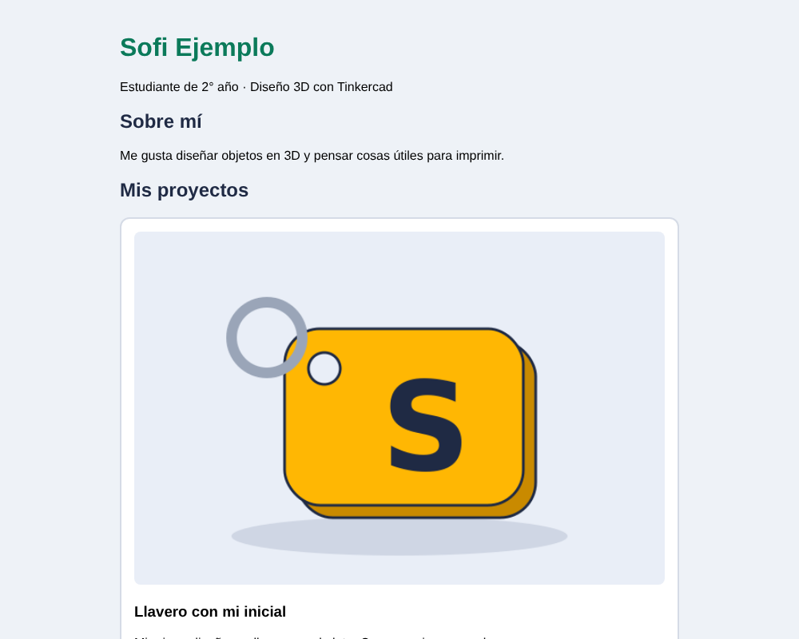

2° año · HTML y CSS
Mi portfolio de proyectos 3D
Armá tu propia página web para mostrar tus diseños de Tinkercad: con tu nombre, una foto de cada proyecto y el link para verlo.

Parte 1 · HTML
Armamos la estructura del portfolio con lo que ya sabemos, más dos etiquetas nuevas.
Prepará tu carpeta
Creá una carpeta llamada mi-portfolio. Ahí adentro va a estar todo: tu página y las fotos de tus proyectos.
Dentro de esa carpeta, creá un archivo nuevo llamado index.html.
Sacá una foto de cada proyecto
Abrí cada diseño en Tinkercad y sacale una captura de pantalla: apretá Windows + Shift + S y marcá el diseño con el mouse. Pegala en Paint y guardala como imagen .png dentro de la carpeta mi-portfolio.
Poneles nombres cortos, en minúscula y sin espacios ni acentos: por ejemplo llavero.png, casa.png, robot.png.
Copiá el link de cada proyecto
En Tinkercad, abrí tu diseño y copiá la dirección que aparece arriba en el navegador. Pegala en un archivo de notas para tenerla a mano: la vas a usar en el paso 6.
💡 Para que otras personas puedan ver tu diseño con el link, en las propiedades del diseño tiene que estar como Público. Si no sabés cómo, preguntale al profe.
El esqueleto de la página
Toda página web tiene la misma estructura. Copiá esto en tu index.html:
<!DOCTYPE html>
<html lang="es">
<head>
<meta charset="UTF-8">
<title>Portfolio de Sofi</title>
</head>
<body>
<!-- Acá adentro va todo lo que se ve en la página -->
</body>
</html>- <head>: información de la página que no se ve. El <title> es el nombre que aparece en la pestaña.
- <body>: todo lo que sí se ve va acá adentro.
- Lo que está entre
<!--y-->es un comentario: una nota para nosotros que el navegador no muestra.
Encabezado y “Sobre mí”
Dentro del <body>, escribí tu nombre con un título <h1> y contá algo de vos con párrafos <p>. Para las secciones usamos <h2>, un título un poco más chico.
<!-- Encabezado: tu nombre y quién sos -->
<h1>Sofi Ejemplo</h1>
<p>Estudiante de 2° año · Diseño 3D con Tinkercad</p>
<!-- Sobre mí -->
<h2>Sobre mí</h2>
<p>Me gusta diseñar objetos en 3D y pensar cosas útiles para imprimir.</p>💡 Cambiá “Sofi Ejemplo” y los textos por los tuyos. ¡Es tu portfolio!
La tarjeta de un proyecto NUEVO
Cada proyecto va dentro de un <div>, que es como una caja que agrupa cosas. Adentro van la foto, el nombre, una descripción y el link. Hay dos etiquetas nuevas:
<h2>Mis proyectos</h2>
<div class="tarjeta">
<img src="llavero.png" alt="Llavero con mi inicial">
<h3>Llavero con mi inicial</h3>
<p>Mi primer diseño: un llavero con la letra S y un agujero para el aro.</p>
<a href="https://www.tinkercad.com" target="_blank">Ver en Tinkercad</a>
</div>- <img> muestra una imagen. En src va el nombre del archivo (tiene que estar en la misma carpeta). En alt va una descripción de la imagen, para quien no la puede ver. ¡No lleva etiqueta de cierre!
- <a> es un link. En href pegás la dirección de tu proyecto en Tinkercad. target="_blank" hace que se abra en una pestaña nueva.
- class="tarjeta" le pone un nombre al div. Por ahora no hace nada, pero lo vamos a usar en la Parte 2 para darle estilo.
Agregá todos tus proyectos y miralo
Copiá la tarjeta una vez por cada proyecto y cambiá la foto, el nombre, la descripción y el link. Guardá el archivo y hacé doble clic en index.html: se abre en el navegador.
Cada vez que cambies algo: guardá el archivo y apretá F5 en el navegador para ver el cambio.
💡 ¿No se ve la foto? Revisá que el nombre en src sea exactamente igual al del archivo (mayúsculas, extensión .png, sin espacios).
Parte 2 · Primer CSS
Ahora le damos estilo: colores, letra y tarjetas. HTML dice qué hay en la página; CSS dice cómo se ve.
¿Dónde va el CSS? NUEVO
El CSS se escribe dentro de una etiqueta <style>, en el <head>. Cada regla tiene esta forma:
qué elemento {
propiedad: valor;
}Empecemos por toda la página (body): un color de fondo y otra letra.
<style>
body {
background-color: #eef2f7;
font-family: Arial, sans-serif;
}
</style>- background-color: el color de fondo.
- font-family: la letra.
- Cada línea termina con punto y coma ; y todo va entre llaves { }.
💡 Los colores se escriben con un código como #eef2f7. Buscá en Google “selector de color” para elegir el tuyo y copiar su código.
Ordená la página y pintá los títulos NUEVO
Agregá estas propiedades al body para que todo quede centrado y no tan ancho, y dale color a los títulos:
body {
background-color: #eef2f7;
font-family: Arial, sans-serif;
max-width: 700px;
margin: auto;
padding: 20px;
}
h1 {
color: #0b7a5a;
}
h2 {
color: #1f2a44;
}- max-width: el ancho máximo de la página.
- margin: auto: la centra.
- padding: deja un espacio adentro, para que el texto no quede pegado al borde.
- color: el color del texto.
Las tarjetas NUEVO
¿Te acordás de class="tarjeta"? Para darle estilo a una clase, en CSS se escribe con un punto adelante: .tarjeta
.tarjeta {
background-color: white;
border: 2px solid #d5dbe6;
border-radius: 12px;
padding: 16px;
margin-bottom: 20px;
}
.tarjeta img {
width: 100%;
border-radius: 8px;
}- border: un borde de 2 píxeles, línea continua (solid) y color gris.
- border-radius: redondea las esquinas.
- margin-bottom: separa una tarjeta de la otra.
- .tarjeta img le da estilo solo a las imágenes que están dentro de una tarjeta: que ocupen todo el ancho (100%).
El link con forma de botón NUEVO
Por último, hacemos que el link <a> parezca un botón:
a {
background-color: #0ca678;
color: white;
padding: 8px 14px;
border-radius: 8px;
text-decoration: none;
}text-decoration: none le saca el subrayado. ¡Guardá, apretá F5 y compará con el ejemplo terminado!
📄 Código completo
Así queda el index.html con las dos partes. Usalo para comparar si algo no te funciona.
<!DOCTYPE html>
<html lang="es">
<head>
<meta charset="UTF-8">
<title>Portfolio de Sofi</title>
<style>
/* Toda la página */
body {
background-color: #eef2f7;
font-family: Arial, sans-serif;
max-width: 700px;
margin: auto;
padding: 20px;
}
/* Títulos */
h1 {
color: #0b7a5a;
}
h2 {
color: #1f2a44;
}
/* Cada tarjeta de proyecto */
.tarjeta {
background-color: white;
border: 2px solid #d5dbe6;
border-radius: 12px;
padding: 16px;
margin-bottom: 20px;
}
/* La foto del proyecto */
.tarjeta img {
width: 100%;
border-radius: 8px;
}
/* El link a Tinkercad, con forma de botón */
a {
background-color: #0ca678;
color: white;
padding: 8px 14px;
border-radius: 8px;
text-decoration: none;
}
</style>
</head>
<body>
<!-- Encabezado: tu nombre y quién sos -->
<h1>Sofi Ejemplo</h1>
<p>Estudiante de 2° año · Diseño 3D con Tinkercad</p>
<!-- Sobre mí -->
<h2>Sobre mí</h2>
<p>Me gusta diseñar objetos en 3D y pensar cosas útiles para imprimir.</p>
<!-- Mis proyectos: una tarjeta (div) por cada proyecto -->
<h2>Mis proyectos</h2>
<div class="tarjeta">
<img src="llavero.png" alt="Llavero con mi inicial">
<h3>Llavero con mi inicial</h3>
<p>Mi primer diseño: un llavero con la letra S y un agujero para el aro.</p>
<a href="https://www.tinkercad.com" target="_blank">Ver en Tinkercad</a>
</div>
<div class="tarjeta">
<img src="casa.png" alt="Casa con techo a dos aguas">
<h3>Mi casa</h3>
<p>Una casa con ventanas, puerta y techo, armada con cubos y prismas.</p>
<a href="https://www.tinkercad.com" target="_blank">Ver en Tinkercad</a>
</div>
<div class="tarjeta">
<img src="robot.png" alt="Robot simpático">
<h3>Robot</h3>
<p>Un robot con antena, brazos y un botón en la panza.</p>
<a href="https://www.tinkercad.com" target="_blank">Ver en Tinkercad</a>
</div>
</body>
</html>⭐ Desafíos
- Elegí tus propios colores para que el portfolio tenga tu estilo.
- Agregá un <button> que diga “Contactame” al final de la página.
- Agregá una sección nueva: “Lo que aprendí en Tinkercad”, con una lista de cosas.
- Probá otra letra en font-family: Verdana, Georgia o Comic Sans MS.